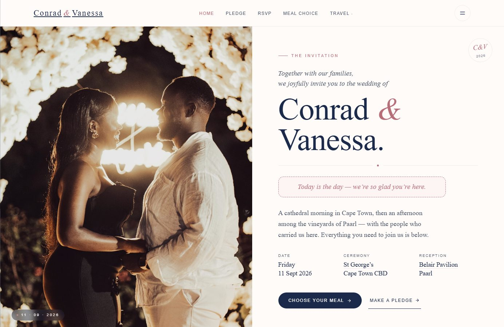
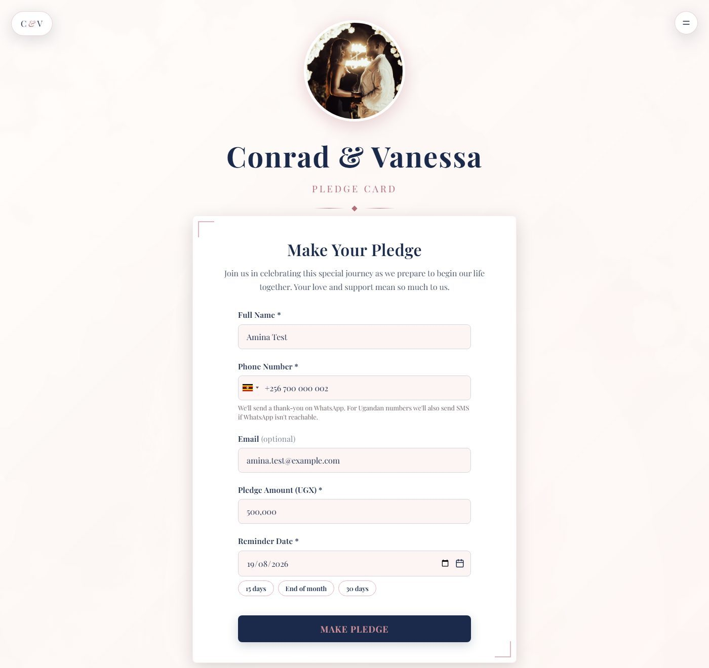
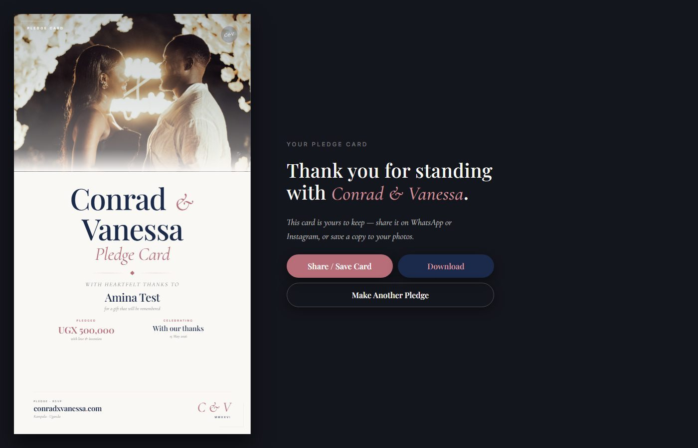
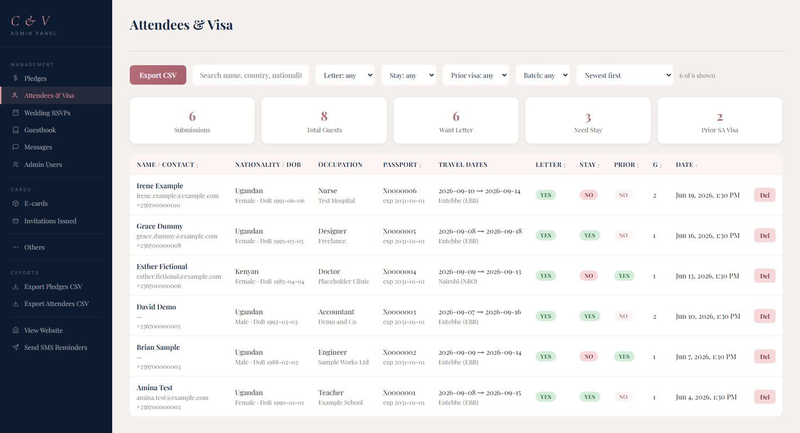
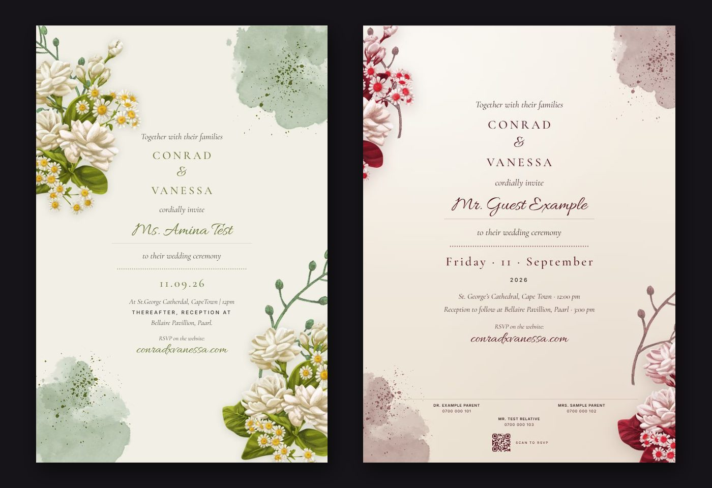
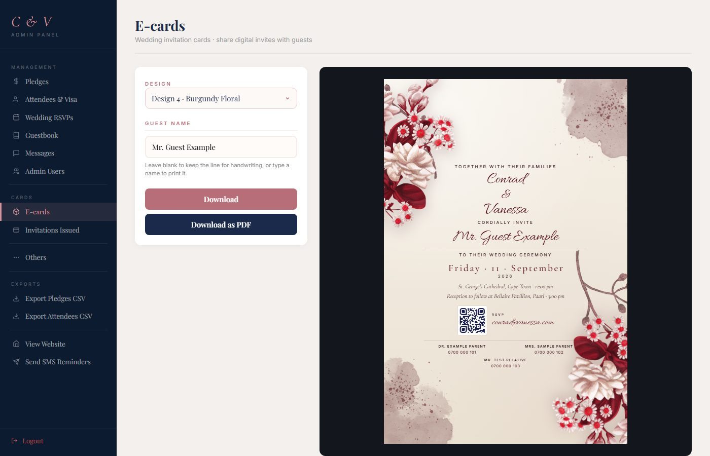
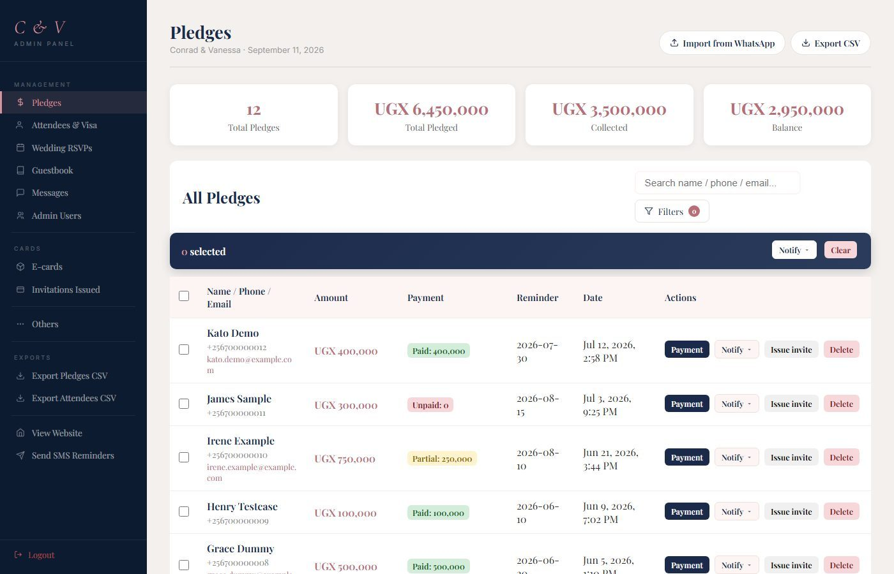
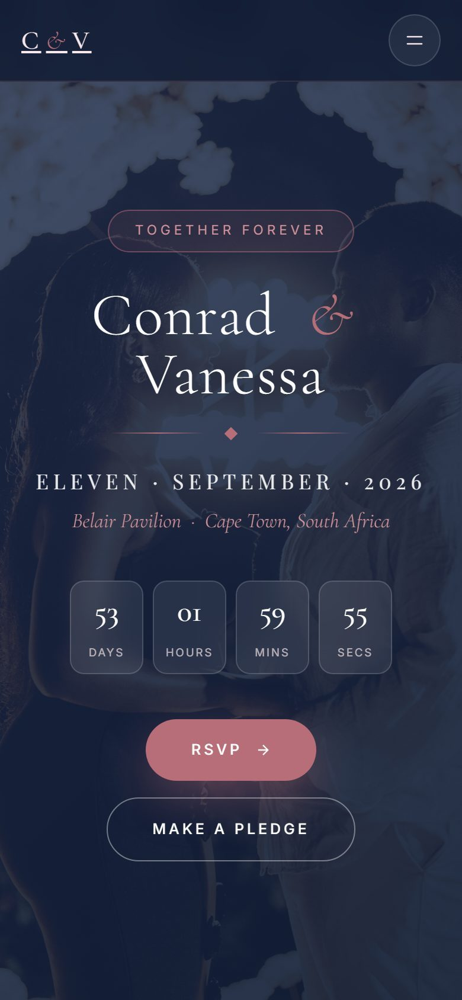
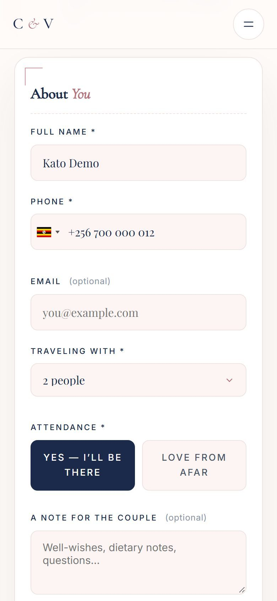

A wedding website for Conrad and Vanessa
Conrad and Vanessa married on Friday 11 September 2026 at St George's Cathedral in Cape Town, with the reception that afternoon at Belair Pavilion in Paarl. Most of the people who love them live in Kampala, more than four thousand kilometres and one visa away. That distance shaped almost everything I built for them.
The site lives at conradxvanessa.com. It started as a pledge form and grew one section at a time, until most of the wedding's paperwork ran through it. Behind it sits a small back office that the wedding committee used every day.
{kind=link}

How Ugandans pay for a wedding
In Uganda a crowd pays for a wedding. Friends and family meet to pledge what they can, then pay it off in the months before the day. Conrad and Vanessa launched theirs at a wedding meeting in Kampala on 15 May 2026, and most guests first reached the site through the QR codes at that meeting.
On the pledge form, a guest enters their details and the amount in shillings, then picks a date for a reminder. The guest gets a thank-you on WhatsApp straight away, or by SMS if WhatsApp can't reach a Ugandan number. On the reminder date, the site sends an SMS on its own. The page also lists the Mobile Money codes to pay with, and the committee members to call.
{kind=link}

{kind=link}

Every pledge comes with its own card showing the guest's name and amount. There are photo designs, and a tall one for a WhatsApp or Instagram story. A pledge card on someone's status thanks them in public, and quietly invites the next person.
Getting Kampala to Cape Town
A wedding abroad means a visa for most Ugandan guests. The RSVP form asks the usual things, like how many are coming and which hotel they'd like. One switch opens the questions the visa needs, and lets guests join a group trip to the visa centre in June or July. Guests could change their answers through a personal link until 4 September.
Each guest still applied for their own visa. The site collected what the couple's team needed to write each invitation letter, and gave the committee a table to filter and export for the visa office. A help page walked guests through the process, with the forms and a checklist.
{kind=link}

The travel pages listed six Cape Town hotels, with prices in both rand and shillings, and things to do during the five days of celebrations, 9 to 13 September.
Invitations, one guest at a time
The invitation cards come in four designs, some light and floral, one deep burgundy. Each card carries the guest's name in script and a QR code back to the RSVP page. The committee issued them from the back office, one guest at a time or straight from a pledge, and downloaded them as images or PDFs for printing. A whole batch could come down as one ZIP file.
{kind=link}

{kind=link}

The committee's side
Most of the work happened in the back office. The pledges page showed each guest's pledge next to what they had paid. From there the committee recorded part payments and sent reminders to many guests at once. Every message the site sent landed in one log, so nobody had to wonder whether a guest had heard from us.
My favourite part is the smallest. The committee already kept its pledge list in a WhatsApp group, with an emoji beside each name for paid or pending. Nobody had to retype it. They pasted the list into the back office, which read the emoji and converted any dollar pledges to shillings.
{kind=link}

Committee members signed in with different roles, so some could edit records and others could only look.
Built for the phone in your hand
Nearly every guest arrived on a phone, usually through a QR code or a link in a WhatsApp group, so I designed every page for a phone first.
{kind=link}

{kind=link}

Under the hood it's plain HTML and CSS with a little JavaScript, and no framework. It began on Cloudflare Pages, with Pages Functions for the API and a D1 database. Later I moved it to a small server of its own, where a thin Node wrapper runs the same functions against SQLite. A command-line tool on that server sends the WhatsApp messages, and EgoSMS carries the texts.
The site grew in the open. Sections went live as the wedding needed them, nine of twelve in the end. The rest, like the guestbook, stayed behind the scenes.
Congratulations, Conrad and Vanessa. May the marriage outlast the website by a very long time.
Every guest in these screenshots is made up, down to the phone numbers and passports. No real guest's details appear in this post.
Comments
No comments yet.